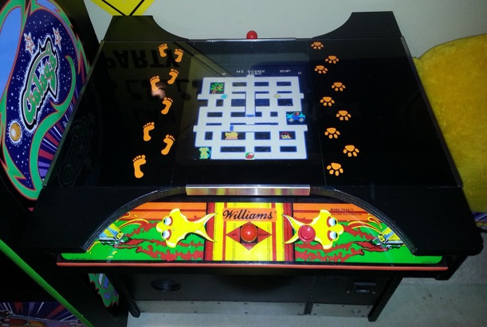
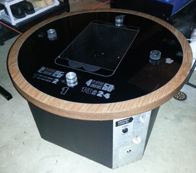
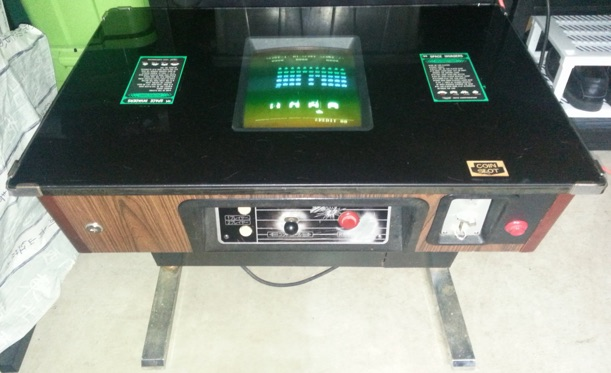
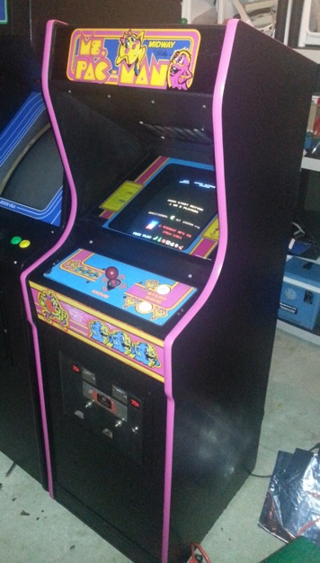
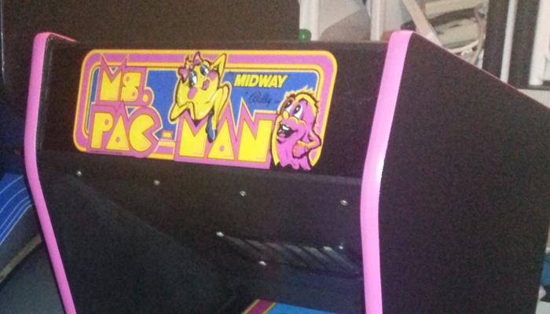

Arcade pillaging adventures
Sunday, July 13, 2014
It’s been a month since I’ve last blogged. This isn’t necessarily a bad thing - after all, I’m an advocate of “quality” over “quantity” when it comes to blog posts (unlike 99% of the blogging community ;-). However, nothing this past month in the tech, developer or gaming worlds really sparked my interest in an academic way.
But, as you probably already know if you read my blog, I have a few hobbies that keep my mind active: vintage computer collecting, and vintage arcade collecting/restoration. And when it comes to vintage arcade collecting/restoration, this month has been a busy one!
Firstly, I picked up a Williams Make Trax arcade cocktail table in good condition - it had the original board in it (working), and the control panels were in excellent condition. It didn’t look as if it was played much....probably because Make Trax is an extremely shitty game. Regardless, I restored the cabinet inside and out to it’s former glory, added the trax vinyl decals to the glass, created a JAMMA connector for the Make Trax PCB (that I wired up to the power supply and CRT monitor), and played it for about an hour straight. That was a freaking long hour.....I tried to figure out if the gameplay itself had any redeeming features. It did not. If I could invent time travel, I’d go back in time, buy a rubber hose, and use it to slap the game developers who created this incredibly horrid game.
Then I realized that the cabinet itself could actually fit a 17” LCD monitor comfortably (Williams arcade cocktails are pretty big), and with the cabinet already wired for JAMMA, I could easily stick in a 60-in-1 multicade PCB with all of the classic games (Pac-man, Gyruss, Frogger, Donkey Kong, etc.). So I did that and it turned out great - I’ve wanted a 60-in-1 for a while, but never ended up actually doing one for myself. All I had to do was add a button to the original control panels and replace the original joysticks with brand new Zippy joysticks (the original Make Trax joysticks were not great, and certainly not enjoyable when playing other games). Here is the end result (ironically the 60-in-1 PCB also comes with Make Trax, which is shown playing in the picture below):


Next, I picked up an old 4-player Pong arcade cocktail (1973, by RAMTEK) as shown to the right. It had the original PCB (working) but no monitor or guts. I’m not a big fan of Pong as a game, but I wanted the PCB for framing in my rec room so I bought an Ultimarc A-Pac card, which allows you to connect up to 4 analog potentiometers (the dials used by Pong) to a PC running the Pong game in the MAME emulator.
Although I tested it out perfectly using my laptop, I never actually went out and picked up a cheap PC and monitor to finish it off - instead I traded it (plus cash) for another project (discussed at the end of this post). As for the original PCB, I framed it in a shadow box from Michaels and hung it on my wall in the rec room as shown below:

After I completed the Make Trax multicade, I managed to score an original 1978 Space Invaders arcade cocktail in decent shape.......and it was working, which is rare for this game today! I bought it from a kid who never opened it because he never had the keys - he tried to drill out one of the locks, but obviously didn’t know what he was doing ;-) So I brought it home, cleaned it up (it smelled of smoke and shame, so it was probably in a bar at one time), and drilled out the locks. The inside was relatively clean, and the picture was crisp and clear. The only thing I noticed was that after playing it for just over an hour, some of the sprites on the screen would mess up. Turn it off and let it cool down, and it works fine for another hour, so I figured it was a slowly dying RAM chip that starts to fail when it heats up, so I found the culprit and replaced it with a new TMS4060 chip. That fixed the problem perfectly and it has been a rock solid machine ever since! In the process of replacing the dying RAM chip, I noticed that the PCBs (there are 3 in a Space Invaders cocktail) were far better quality than other Space Invaders cocktail PCBs I’ve seen - most components were socketed and higher-end, which is probably why it is still working today. The only other thing I did was replace the right lock with a red button that is connected to the coin mechanism so that I don’t need to insert quarters - just press the red button to insert a credit!


My latest project was a Ms. Pac-man arcade cabaret (mini) that I bought from a friend of mine (and included the Pong table as a partial trade). The cab had most of the original wiring, but no monitor or PCB......which is fine, because I have a spare CRT monitor from the Make Trax, and a speedup version of Ms. Pac-man that I never used (I bought it last year from another collector).
So I restored the cabinet, replaced the dead transformer within, installed new pink t-molding, added the CRT monitor, connected up the PCB and voila! Ms. Pac-man.
I know that this all sounds like a lot of work, but for me, it’s definitely helped keep me busy on the weekends and weeknights, and out of trouble ;-)
